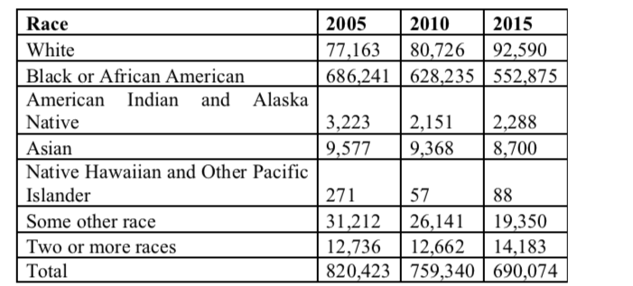
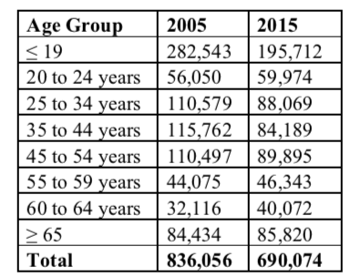
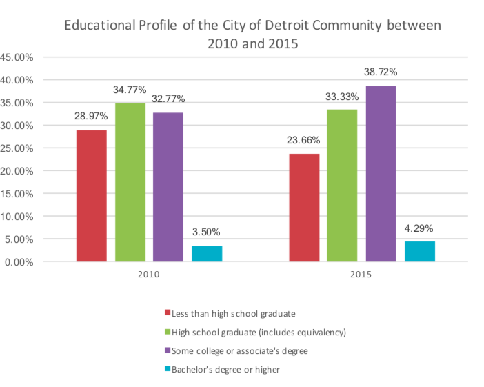

Economics
BY Ru Xu
Published October 10, 2017
(skills&tools:Data Analysis with Excel)
Each city has its own stories, and it is always a good way to find stories from numbers. In this article, in order to discover some news leads, I analysis several aspects of Socioeconomic Characteristics of the City of Detroit, Michigan.
The data I used is from U.S. Census Bureau.
Race in the City of Detroit
I calculate the percentage of each race and create a stacked column chart to compare the racial distribution changes between 2005 and 2015.
Race for the City of Detroit, Michigan
Source: U.S. Census Bureau
Between 2005 and 2015, the total number declined by 130,349. Also, the number of African American decreased by 133,366, and the percentage declined by 3.5. That is, in Detroit city, a large number of African American moved away. On the contrary, the number of White increased by 15,427 and the percentage rose by 4 percentage. That shows a number of White moved into Detroit city. The numbers of other races have no significant changes.
Age Distribution in the City of Detroit
I calculate the percentage of each age group and create a 100 percent stacked column chart to compare the age makeup of the city between 2005 and 2015.
Age Groups for the City of Detroit, Michigan
Source: U.S. Census Bureau
Between 2005 and 2015, for the total number of Detroit city, it declined by 145,982. Also, the number of groups whose age under 19 decreased by 86,831, which is 5.4 percentage. At the same time, the number of group age between 25 to 54 years old declined by 74,685, which is 2.3 percentage. The numbers of other age groups slightly increased. This shows the main workforce moved out of this city and they may take their children away.
Education in the City of Detroit
I create a clustered column chart to compare the educational profile of the City of Detroit community between 2010 and 2015.
Age Groups for the City of Detroit, Michigan
By observing the chart of educational profile of the City of Detroit community between 2010 and 2015, it can be concluded that the rates of less than high school graduate and high school graduate decreased by 5.31 and 1.44 percentage, respectively. Meanwhile, the rates of some college degree and bachelor’s degree or higher increased by 5.95 and 0.80 percentage, respectively. That shows the number of students with higher education had risen, which affects socio-economic profiles in many aspects. The college education increases the chances that adults will move up the socio-economic ladder. Higher education improves the poverty rate. The 5% poverty rate in 2011 for bachelor’s degree recipients was about one-third of the 14% poverty rate for high school graduates. College education leads to healthier lifestyles, reducing health care costs. In 2007–2010, when 35% of all men and 36% of all women ages 25 and over were de need as obese, 28% of men and 26% of women with Bachelor’s degrees were obese.
Crime in the City of Detroit
In 2016, Detroit was the most violent city in the U.S. I examine the table below on Crime data for Detroit, and create a clustered column chart to compare Detroit crime rate between 2005 and 2015.
Unit of measurement: Rate per 100,000 inhabitants
Compared to the U.S. aggregate level, the crime rate in Detroit is much higher. However, we can see decreases in violent crime and property crime between 2005 and 2015 in Detroit. At the same time, the rates of violent crime and property crime also declined. From that trend we can see, Detroit is an epicenter of public safety of the U.S.. Therefore, solving the safety issues in Detroit is the primary task for the American government.
Demographics of City of Detroit
Detroit has been losing population (see the figure below) and is known as one of the major “shrinking cities.” Although recent demographic data shows that Detroit is gradually stopping losing population, many people argue that it would still be very unlikely to see a dramatic population gain for the city in the near future.
Source: http://www.dailydetroit.com/2017/05/25/detroit-continues-lose-population-according-new-census-data/
Detroit underwent rapid growth in the 1920s, while automobile industry skyrocketed. It became a city which relied on cars. By 1950s, major changes in the automobile industry were underway. The mass migration of industry to low-paid areas caused bankruptcies of car companies and massive population loss in Detroit. Between 1947 and 1963, the city lost over 140,000 manufacturing jobs. However, the situation of Detroit city has improved and a deceleration of population has slowed in recent 7 years. As for the GDP for Metro Detroit, which consists of the Detroit city and surrounding area, it increased year by year, as the below line graph shown.